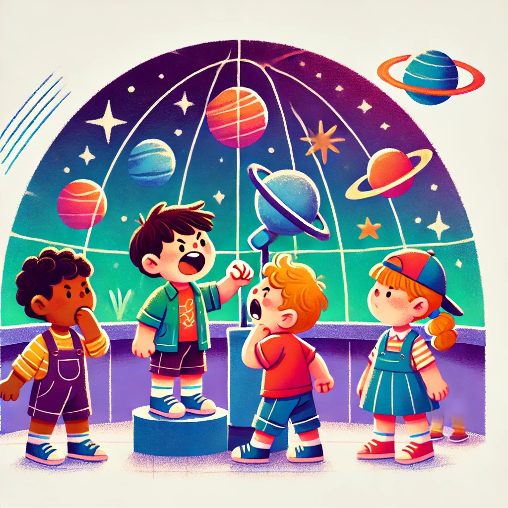

48th ICPC World Championship · Problem G
Taking a group of kindergarten kids to the planetarium isn’t easy. You really wanted to do this, to allow every kid a chance to get into the room with the giant telescope and take a look at Jupiter. And now that you’re going, you remember the stories from other caretakers that kids can misbehave and leave some nasty surprises in the telescope room for the kids after them. You really want to avoid that.
You know the kids in your group very well. Each kid is jealous of one other kid, who is cooler than them, and they might misbehave in the telescope room if they know the kid they’re jealous of will be there at some point after them—not necessarily immediately after them, just at some later point. You thought this would be easy—the coolest kid in the class doesn’t have anyone to be jealous of, so she can go first, and then all the other kids in order of coolness. However, you just learned that the coolest kid is an exception—instead of being jealous of someone cooler than herself, she’s jealous of some other random kid in the group. This sounds like a disaster!

Fortunately, you also know that each kid has some other kid they really, really like. So whenever a kid in the telescope room is thinking about setting up a surprise, if they know the kid they like is going to be in the room after them and before the kid they’re jealous of, they will refrain from misbehaving. To make this formal, if a kid A is jealous of kid B, and really likes kid C, then there’s a risk A will misbehave and set up a surprise in the telescope room if B will be in the telescope room after A, and C will be there either before A or after B.
Can you figure out an order in which the kids can go to the telescope room so no surprises occur?
The first line contains an integer n (3 ≤ n ≤ 200 000), the number of kids in your group. The kids are indexed from 1 to n in decreasing order of coolness. Each of the next n lines describes one of the kids. The ith of these lines contains two integers: ji, the index of the kid that the ith kid is jealous of, and li, the index of the kid that the ith kid really, really likes (1 ≤ ji, li ≤ n, ji ≠ li, ji ≠ i, li ≠ i, and ji < i for all i except 1).
Output a line containing n integers, the order in which the kids should enter the telescope room. If there are multiple ways to order the children, output any of them. If no order exists output impossible.
4 4 2 1 4 2 4 2 1
1 2 3 4
4 2 3 1 4 2 1 1 2
impossible